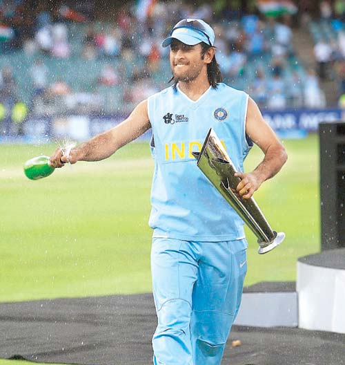
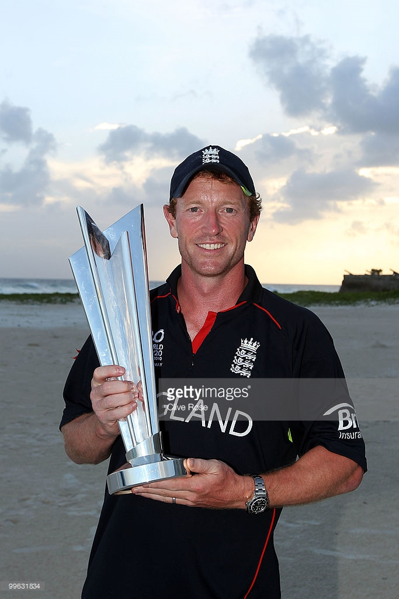
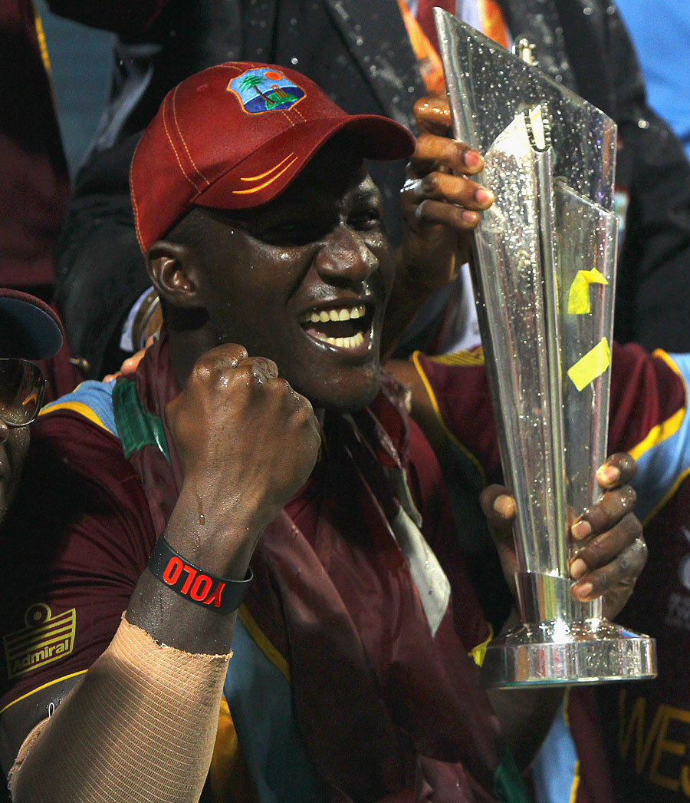
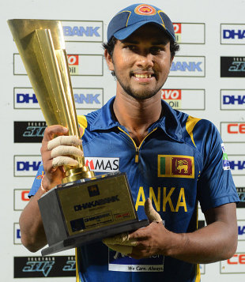

Amazing moments of Cricket
Winners of ICC T20 Trophy so far....
Well till now five ICC T20 Touarnaments have been played. Each of them vistnessed amazing crowds
and their support.Again this time too fans are exicted.Here are the winners of previous World Cups.

M.S.Dhoni(IND-2007)

Y.Khan(PAK-2009)

Collingwood(ENG-2010)

Darren Sammy(WI-2012)

D.Chandimal(SL-2014)